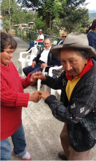
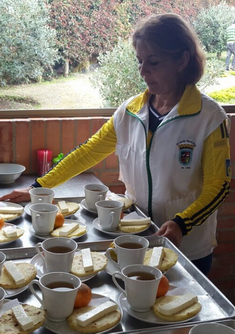
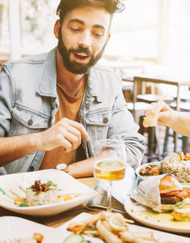
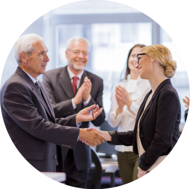

La Fundacion de planeación social "Plan Social" nace con personería jurídica No.2061 del día 27 de 1.979, otorgada por la Alcaldía Mayor de Bogotá.
Se originó para satisfacer las necesidades básicas de salud, educación, talento humano, vivienda, recreación y desarrollo social de la población vulnerable de la localidad de Usme, en el barrio Yomasa, en Bogotá.
Posteriormente se trasladó a Chía (Cundinamarca), y sus programas se han extendido a varias regiones del país.
Hemos desarrollado convenios y/o programas en diferentes municipios haciendo presencia en Chía, Ubalá, Tocancipá, Cajicá, Tenjo, La Peña, Ocaña, Simijaca, Neiva e Ibagué.
Plan social fue creado para desarrollar programas, en pro del mejoramiento de la calidad de vida, brindando atención integral a la población vulnerable, otorgándole vivienda, alimentación, educación, asistencia médica y cuidado personal, para satisfacer las necesidades básicas de niños, jóvenes, personas en estado de discapacidad y adultos mayores, mediante la modalidad de los derechos fundamentales como ciudadanos.
Establecer programas en el sector social encaminados a la creación y apoyo de casas geriátricas, hogares y jardines infantiles, colegios para niños y adolescentes especiales, restaurantes comunales y escolares, hogares juveniles y de paso.
Desarrollar programas con equidad, para contribuir con el mejoramiento de la calidad de vida tanto de niñas y niños, como el de jóvenes y adultos mayores.
Ser reconocida a nivel internacional en el 2030, como una fundación que contribuyó al desarrollo social de la población más vulnerable y con acceso a todos los servicios esenciales de la sociedad como salud, educación, vivienda, empleo y recreación